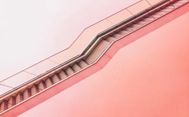
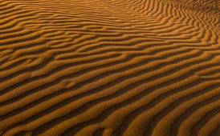

Latest
Beauty is seen through a lens
Perspective matters.
All my photographs try to capture that perspective, however subtle.


- 
- 


-
Date
July 2019
-
Location
Morrocan Highlands
-
Camera
Canon EOS
1D Mark IV -
Lens
70mm f2.8 @ 1/16”
Mineral carvings
Deep in the deserts of Morroco, lies a dried-up valley, featuring some of the most exquisite rock formations, carved millions of years ago.
To truly experience these beautiful formations, one has to visit them in person. I hope my photos have managed to capture the sheer size – gravitas even – and spellbinding nature of these eroded walls.